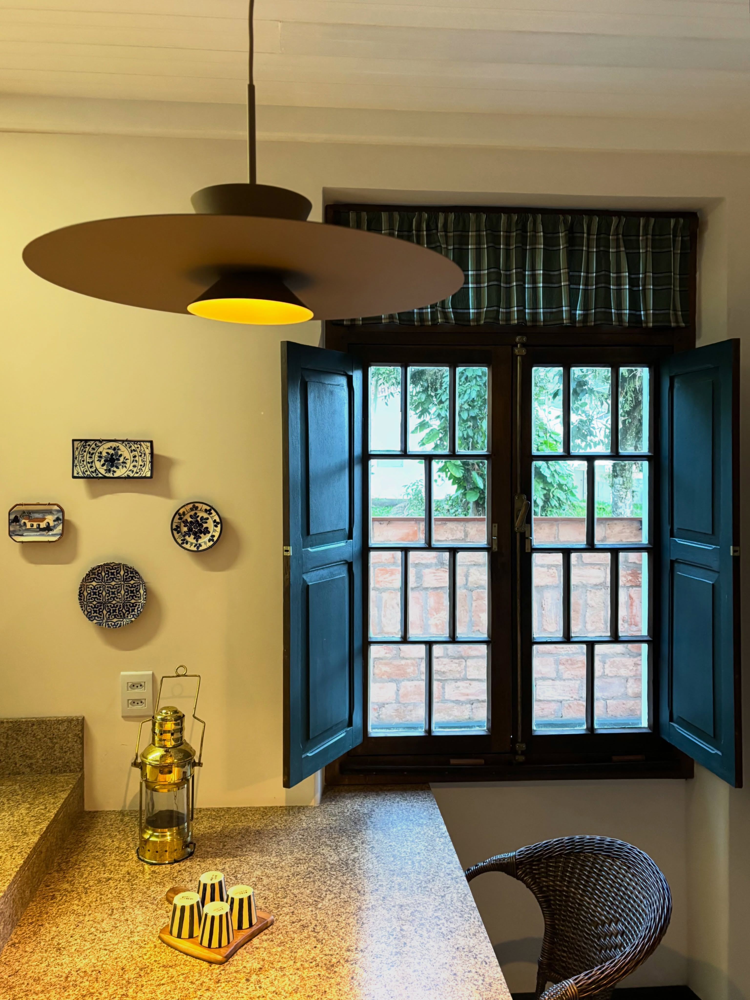
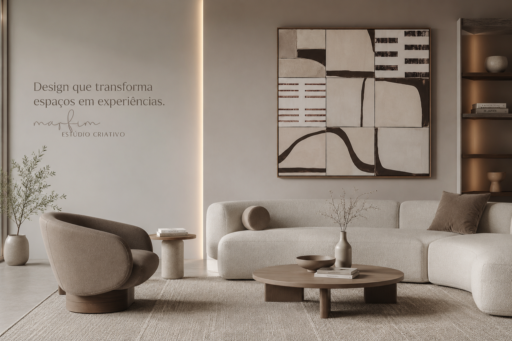
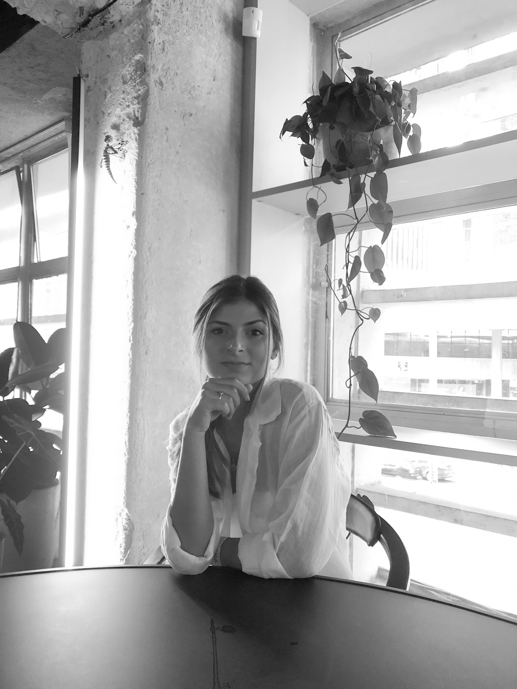
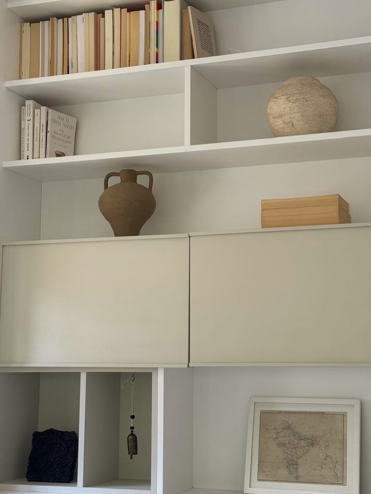

01 — 2024

Apartamento Higienópolis
Reforma integral de um apartamento dos anos 1950, onde marcenaria sob medida e tons de marfim recompõem a luz e a generosidade dos ambientes.


Projetamos a partir de como um espaço é vivido — material, peso e o silêncio quente que uma sala é capaz de guardar.
Fundado pela arquiteta Carolina Chede e com base em Laguna, Santa Catarina, o Estúdio Marfim é um estúdio de interiores e design. Desenhamos espaços, mobiliário e objetos com a mesma atenção — escolhendo cada material para envelhecer bem e cada peça para parecer inevitável.
Trabalhamos lado a lado com marceneiros, ceramistas e artesãos, num processo lento e deliberado — do primeiro croqui à última peça instalada.
Reforma e concepção de ambientes residenciais e comerciais — do layout de planta à última luminária.
Peças sob medida e coleções autorais, desenhadas e prototipadas dentro do estúdio.
Revestimentos, objetos e superfícies feitos à mão em parceria com ceramistas.
Projeto de luz natural e artificial que define a temperatura e o silêncio de cada ambiente.
Curadoria de materiais, styling e identidade visual para espaços e marcas.

Reforma integral de um apartamento dos anos 1950, onde marcenaria sob medida e tons de marfim recompõem a luz e a generosidade dos ambientes.

Um showroom concebido como uma paisagem de materiais — superfícies em terracota e cal que conduzem o olhar e o toque por todo o espaço.
Uma coleção de mobiliário em madeira maciça e palhinha, desenhada e prototipada no estúdio — peças quentes, tácteis e feitas para durar.
Começamos no espaço e na conversa — entendendo a rotina, a luz e a atmosfera que o ambiente precisa ter.
Testamos materiais, cores e móveis em amostras e protótipos antes de definir qualquer acabamento.
Acompanhamos marceneiros e artesãos de perto, cuidando de cada encontro para que o resultado pareça sereno e inevitável.